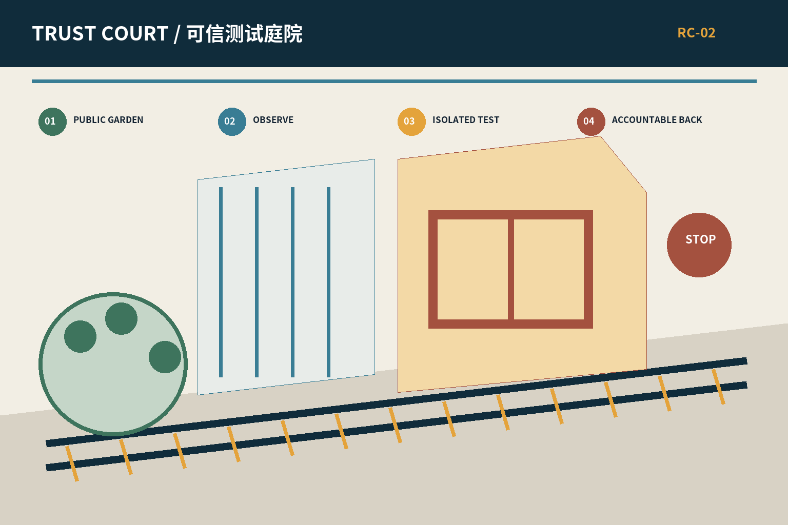
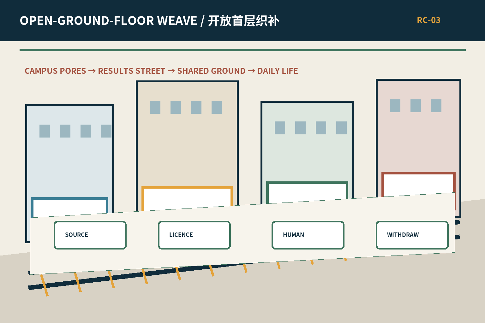
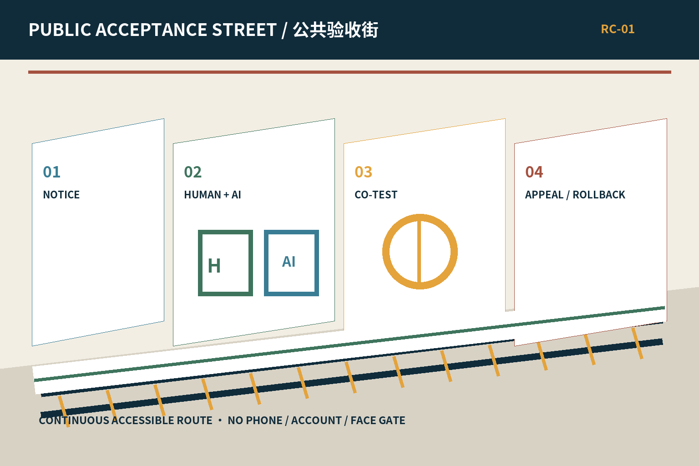
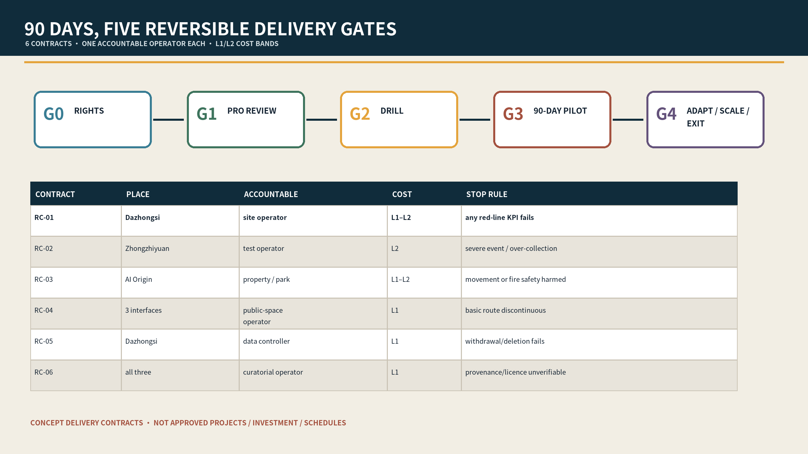
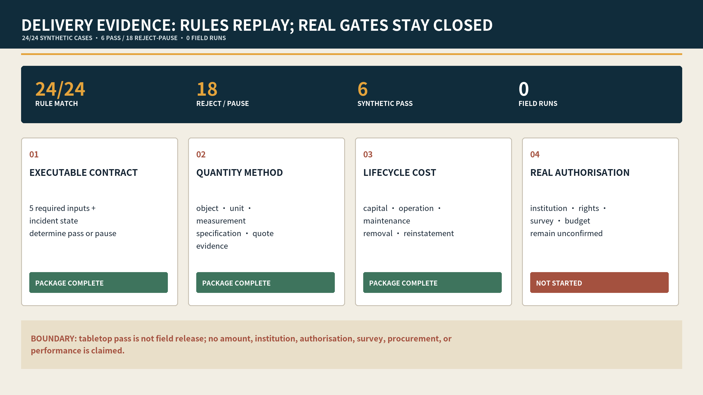
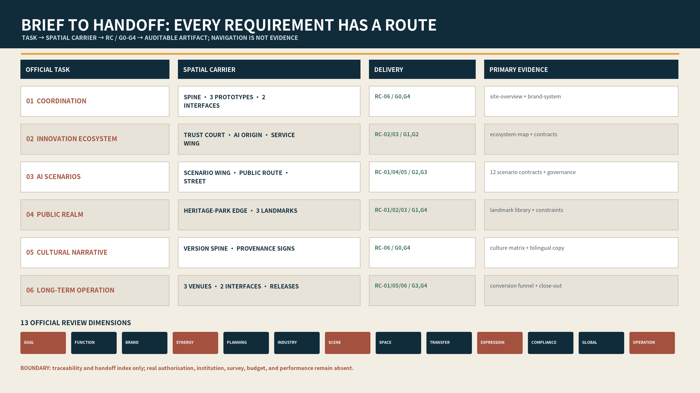
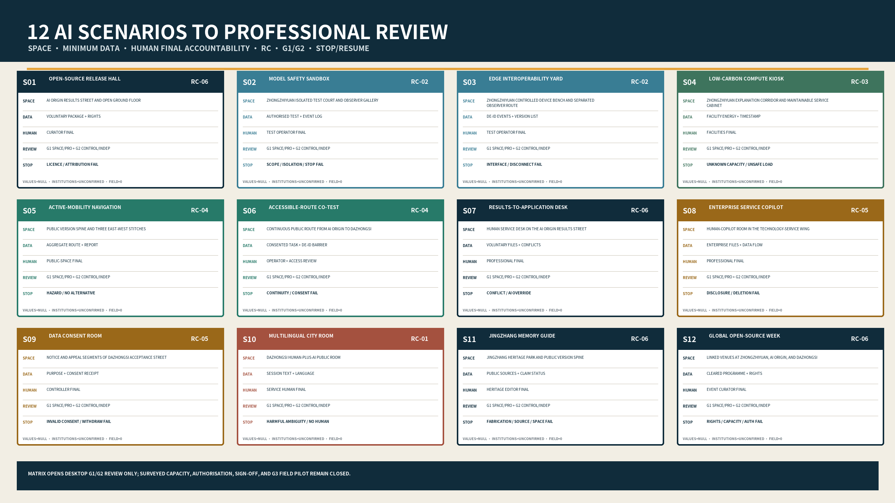
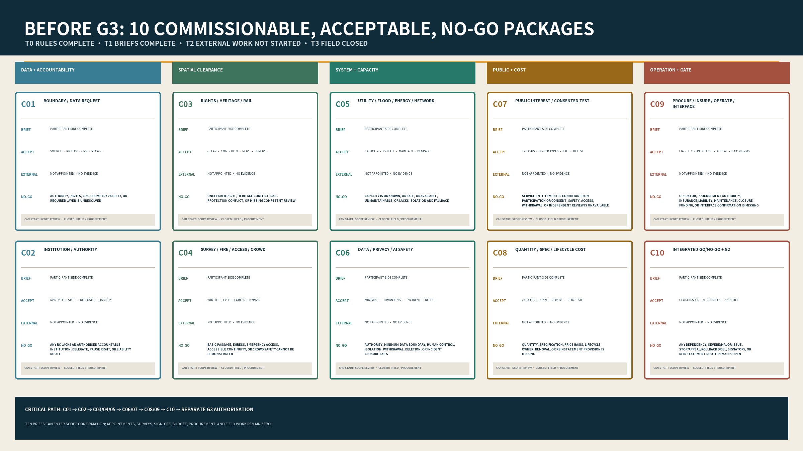
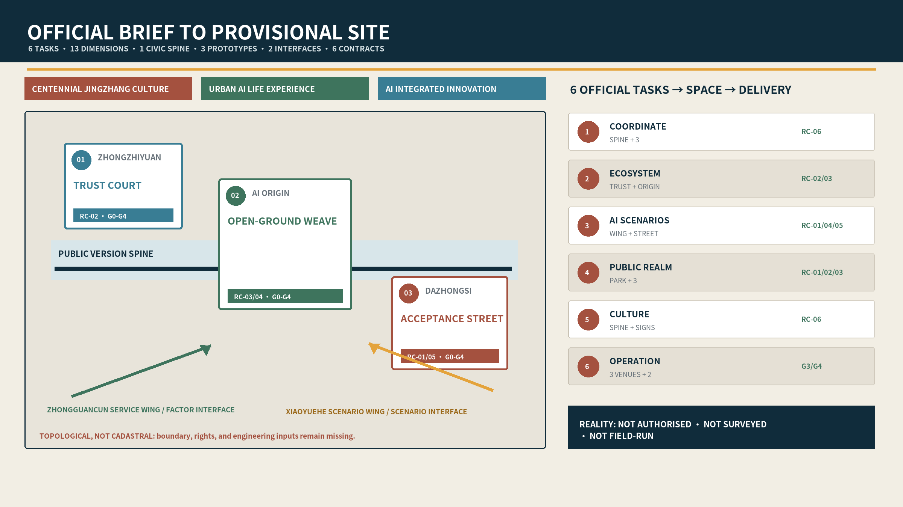

spine + three areas + two wings + 12 scenarios
package response completeEVIDENCE BOUNDARY: All boundaries are provisional; scenes are AI-generated concepts, not site or approval evidence.
G0-G4 + RC-01—RC-06 + 90 days
not authorised · not field-runpause authority, resume evidence, dual sign-off
institutions unconfirmedprovisional boundary, unknown controls, L0-L2 cost bands
not existing conditions or budget
01Trust Court
garden—observation—test court—R&D back

02Open-Ground-Floor Weave
pores—results street—shared ground—daily life

03Public Acceptance Street
notice—parallel service—co-test—rollback
FIVE-STEP PUBLIC VALIDATION LOOP
- Problem
- Team
- Isolate
- Accept
- Scale / Exit

Concept implementation matrix; not to scale and not an approved project or schedule.

Role types defined; institutions unconfirmed; not authorised and not field-run.
SIX DELIVERY CONTRACTS
Select a contract to see its common floor.
OFFLINE SYNTHETIC REPLAY AND QUANTITY METHOD
synthetic rules match expectation
6 pass · 18 reject/pausefield runs, real participants, or institutional sign-off
real gates remain not startedRC quantity and lifecycle-cost methods
quantities and amounts remain nullreview-dimension evidence routes
navigation does not replace sourcesCORE METRICS
provisional site
design green ratio
design public-space ratio
OFFICIAL BRIEF TO SITE AND PROFESSIONAL HANDOFF
Six tasks, thirteen official review dimensions, three focus-area handoffs, and G0-G4 states follow one evidence route. The two JSON records are navigation and professional templates, not substitutes for primary evidence.

task trace · area handoff · reality: not authorised, not surveyed, not field-run.
OFFICIAL BRIEF TO SITE AND PROFESSIONAL HANDOFF
Six tasks, thirteen official review dimensions, three focus-area handoffs, and G0-G4 states follow one evidence route. The two JSON records are navigation and professional templates, not substitutes for primary evidence.
task trace · area handoff · reality: not authorised, not surveyed, not field-run.
OFFICIAL BRIEF TO SITE AND PROFESSIONAL HANDOFF
Six tasks, thirteen official review dimensions, three focus-area handoffs, and G0-G4 states follow one evidence route. The two JSON records are navigation and professional templates, not substitutes for primary evidence.
task trace · area handoff · reality: not authorised, not surveyed, not field-run.
OFFICIAL BRIEF TO SITE AND PROFESSIONAL HANDOFF
Six tasks, thirteen official review dimensions, three focus-area handoffs, and G0-G4 states follow one evidence route. The two JSON records are navigation and professional templates, not substitutes for primary evidence.
task trace · area handoff · reality: not authorised, not surveyed, not field-run.
12 AI SCENARIOS TO PROFESSIONAL RESPONSIBILITY
S01-S12 individually lock space, minimum data, human final accountability, RC, G1/G2 roles, measurable proxy, failure, pause, and resume evidence. Values are null, institutions unconfirmed, field evidence zero, and G3 closed.

scenario professional-review matrix · desktop professional review only, not authorisation, capacity, or implementation.
TEN COMMISSIONING AND NO-GO PACKAGES BEFORE G3
C01-C10 convert reality gaps into accountable roles, professions, deliverables, external inputs, dependencies, acceptance, and no-go conditions. T0 rules and T1 briefs are complete; T2 external professional work has not started; T3 field work is closed.

pre-G3 commissioning plan · ready for scope confirmation, not professional appointment, budget, procurement, or field authorisation.
COMPLETE DESIGN EVIDENCE INDEX
Overview map · Three-level scope · Key areas · Land-use zoning · Mobility · Blue-green public realm · Buildings · Renewal projects · AI scenarios · Core metrics · Task coverage · Self-check status · Sources · Assumptions

Concept overview using provisional geometry; not to scale and not an official boundary.